Классы и обьекты
Большую часть написанного кода на РНР можно встроить непосредственно в разметку веб- страниц, потому что для этого в РНР предусмотрена соот- ветствующая поддержка.
РНР 7, выпущенной в декабре 2015 года. В частности, в этой версии поддерживаются объявления типов параметров и возвращаемых типов
В декабре 2020 года, почти через пять лет после выпуска РНР 7, был подготовлен к выпуску РНР 8.
Объекты не всегда были основной частью РНР- проекта. Более того, идея реализовать объекты пришла в голову разработчикам РНР в виде за- поздалой мысли.
Своим происхождением язык РНР, каким мы его знаем сегодня, обя- зан двум инструментальным средствам, которые разработал Расмус Лер- дорф на языке Perl. Сокращение “РНР” обозначало “ Personal Home Page Tools” ( Средства для персональной начальной страницы ), a “ FI” “ Form Interpreter” ( Интерпретатор форм ).
Для расширения возможностей языка РНР был заново написан процессор Zend, название которого происходит от имен Zeev и Andi . Процессор Zend стал одним из основных компонентов, положенных в основу работы РНР.
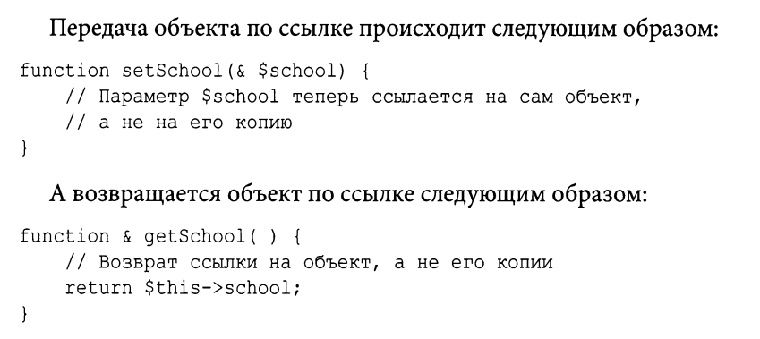
Несмотря на то что такая конструкция действовала исправно, програм - мисты часто забывали добавить символ амперсанда, и вероятность по- явления ошибок в объектно -ориентированном коде была очень высока.
В версии РНР 5.3 были введены пространства имен. Это по- зволило создавать именованные области видимости для классов и функ - ций, в результате чего снизилась вероятность дублирования имен при включении компонентов в библиотеки и расширении системы
Класс — это шаблон кода, применяемый для создания объектов. Класс объявляется с помощью ключевого слова class и про- извольного имени класса.
В версиях РНР 4 и РНР 5 (до версии 5.1 включительно) объекты можно выводить на печать непосредственно. В итоге объект будет приведен к символьной строке, содержащей его идентификатор. Но, начиная с версии РНР 5.2, такая возможность больше не поддерживается , и любая попытка ин - терпретировать объект как символьную строку приведет к ошибке, если толь- ко в классе этого объекта не будет определен метод toString ()
В классах можно определять свойства и методы, свойства можно передоваать в конструкторе класса, мнтод отличается от функции тем что он определяется в теле класса
Как и свойства, методы можно определять как public, protected или private. Объявляя метод как public, мы тем самым обеспечиваем возможность его вызова за пределами текущего объ- екта. Если в определении метода опустить ключевое слово, определяющее область его видимости, то метод будет объявлен как public неявно.
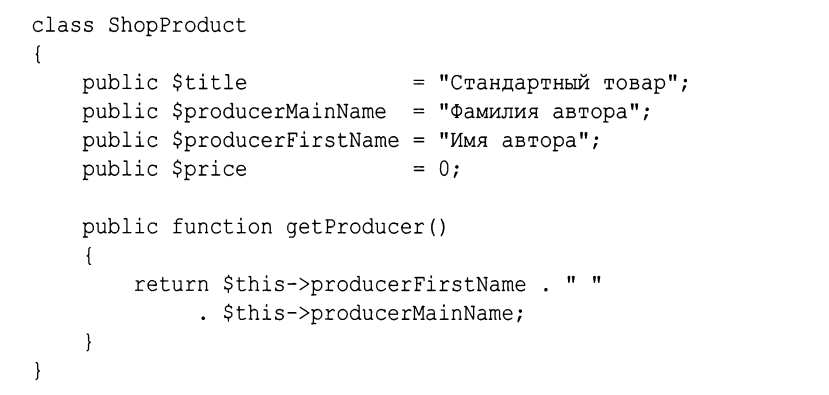
Метод конструктора вызывается при создании объекта. Он служит для настройки экземпляра объекта, установки определенных значений его свойств и выполнения всей подготовительной работы к применению объекта.
До версии РНР 5 имя метода-конструктора совпадало с име- нем класса, к которому оно относилось . Так, в качестве конструктора класса ShopProduct можно было использовать метод ShopProduct ( ) . Такой синтак- сис считается устаревшим, начиная с версии РНР 7, и вообще не работает в вер- сии РНР 8. Метод-конструктор следует именовать __construct().
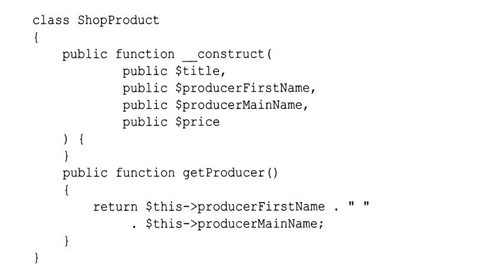
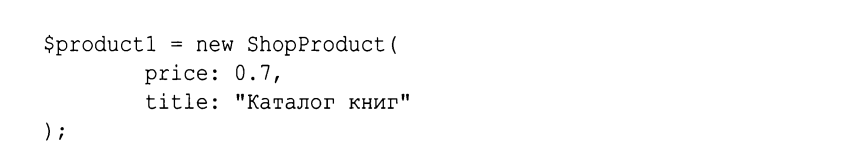
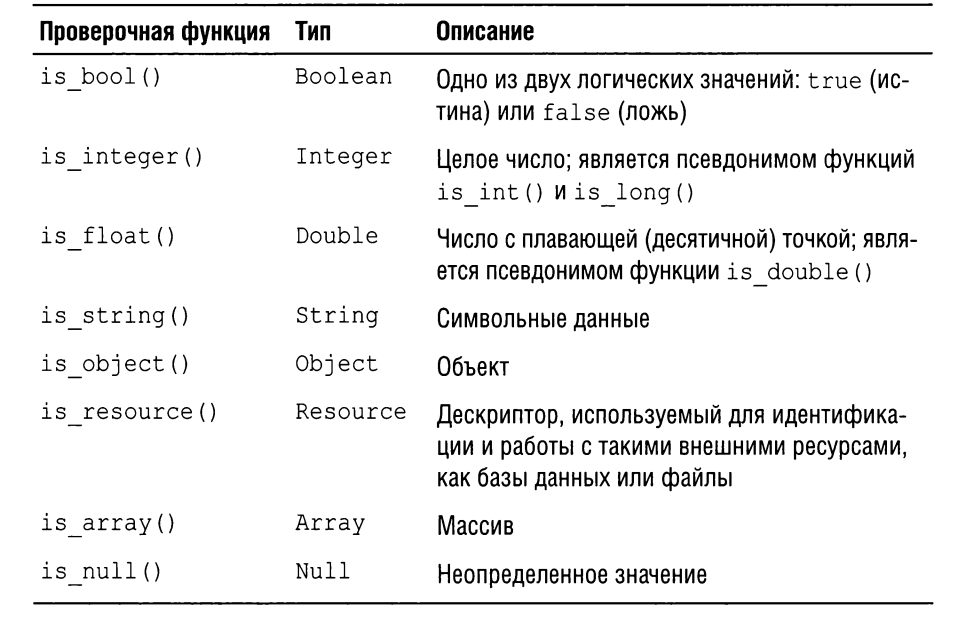
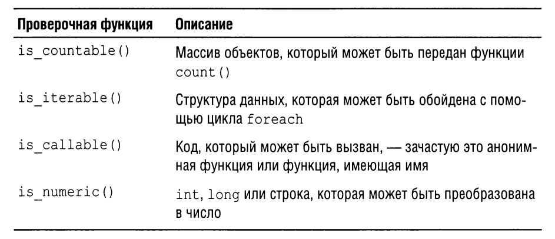
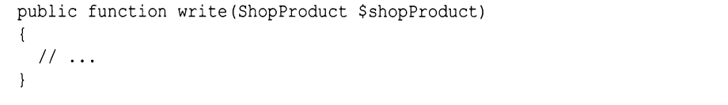
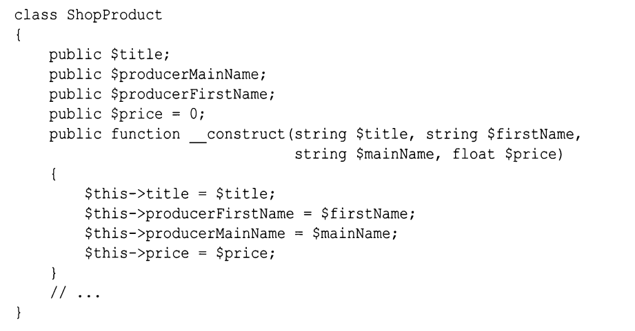
Если аргумент не обьязательный то можно использовать эту конструкцию public function getValues(array $default = null) Если значение типа может быть null то можно использовать такую конструкцию public function add(?string $value)
Смешанный тип можно определить так mixed, или вот так int|fload
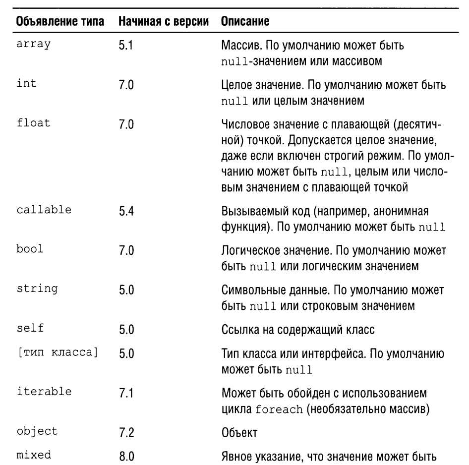
Наследование — это механизм, посредством которого один или несколь- ко классов можно получить из некоторого базового класса. Класс, унасле- дованный от другого класса, называется его подклассом. Эта связь обычно описывается с помощью терминов родительский и дочерний, дочерний класс расширяет родительский. Наследование происходит ключевым словом extends. Определяя конструктор в дочернем классе, вы берете на себя ответствен- ность за передачу требующихся аргументов родительскому классу. Синтаксическая конструкция parent :: construct() означает сле- дующее: “Вызвать метод construct () из родительского класса”
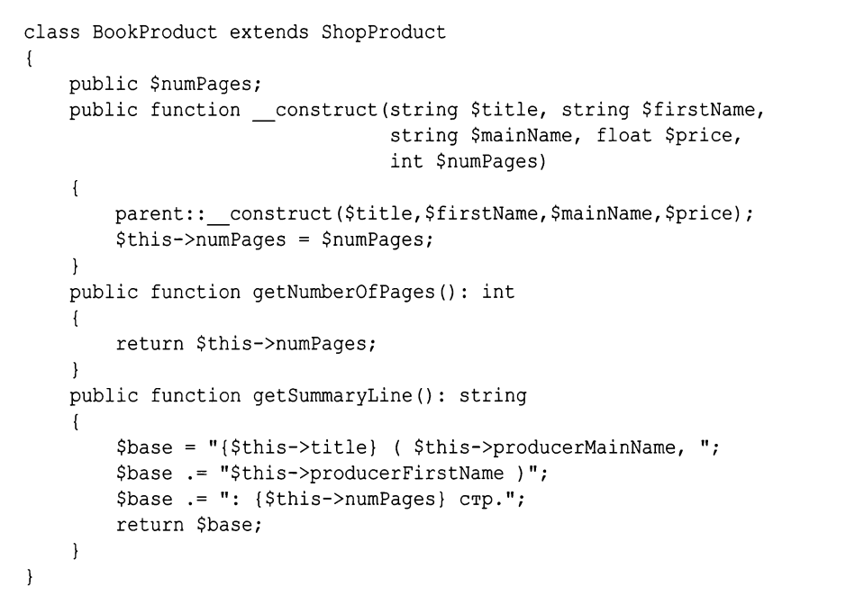
Ключевое слово parent можно использовать в любом методе, перекры- вающем свой эквивалент из родительского класса. Когда метод пере- крывается, вероятнее всего, требуется расширить, а не отменить функ - циональные возможности родительского класса. Достичь этого можно,
Элементы класса можно объявить как public ( открытые), private ( за-
крытые ) или protected ( защищенные )
• К открытым свойствам и методам можно получать доступ из любого контекста.
• К закрытому свойству и методу можно получить доступ только из
того класса, в котором они объявлены. Даже подклассы данного клас-
са не имеют доступа к таким свойствам и методам.
• К защищенным свойствам и методам можно получить доступ либо
из содержащего их класса, либо из его подкласса. Никакому внешне-
му коду такой доступ не предоставляется.
Свойства класса тоже можно типизировать
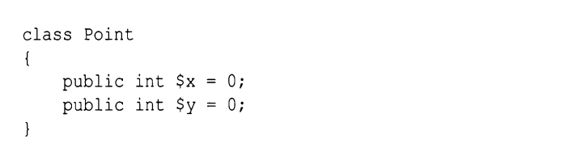